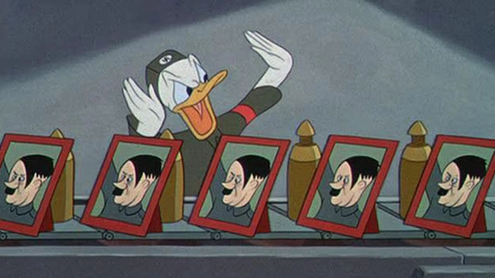
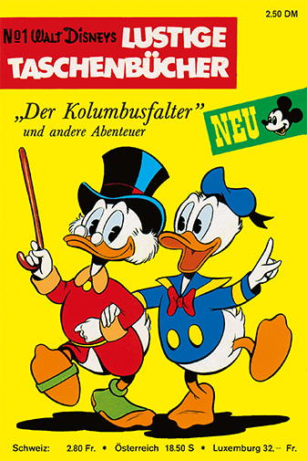
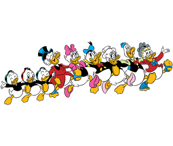
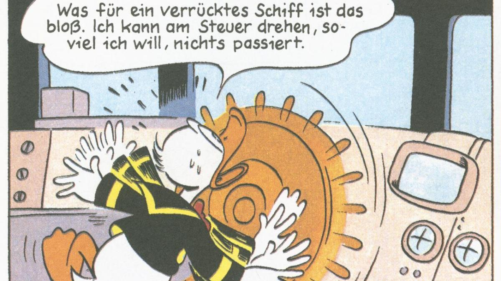

Hey there, Duckburg enthusiasts!
Get ready to quack up because we're dedicating a whole page to the one and only Donald Duck! 🦆
Relation
Dagobert duck is the uncle of Donald Duck. If Donald Duck is in need, Dagobert Duck always borrows him money because he is so rich.
General Information about Donald Duck
Donald Duck first appeared in a book called "The Adventures of Mickey Mouse" as a friend of Mickey Mouse. On the 9th June 1934, Donald Duck first appeared
in a tv show called The wise little hen. After and after, he showed up
in almost every Disney Show and a lot of comics. Sadly, he also was used for American War propaganda during the 2nd world war (1941-1945). A movie called
Der Fuehrer's Face was released by americans and also won an Oscar for the depiction against Adolf Hitler. In the movie, Donald Duck was an assembly line worker
in a german ammunition fabric. He gets showed very upset and no longer believes in the Nazi regime.

Outcut of the movie Der Fuehrers Face His own comic got released 1967, and is called Lustiges Taschenbuch.
Donald Duck is the main person of the comic, and Dagobert Duck also often appears.

First editon of Lustiges Taschenbuch
Dagobert Duck's parents are Dortal Duck and Degenhard Duck. He is part of the huge Duck Family
Unhappily, he hasn't got any children. But he really loves his nephews: even if they are sometimes very disturbing!
They are called Tick, Trick and Duck. There parents are Della Duck, which is Donald's sister. The father is unknown at the moment.
Donald Duck also got a lot of friends, called Daisy Duck, Dicky Duck, Dacky Duck, Ducky Duck and Daniel Düsentrieb. Daisy Duck is
Donald's girlfriend. Daniel is a very smart engineer, who also helps out Donald if he is in need.

Picture of family duck and their friends.
Donald duck is a bit of a hothead and often has money problems and bad luck.
He tries different jobs, but they don't always work out. Sometimes he works at his uncle
Dagobert Duck's margarine factory.
Donald likes to relax and doesn't work too hard.
He really cares about his girlfriend, Daisy Duck, but they never get married.
His cousin, Gustav Gans, competes with him for Daisy's attention, making things a bit complicated.
Donald's main problems are Gustav, who always seems lucky, and his rich uncle, Dagobert Duck.
Donald often borrows money from Dagobert, who uses it to make Donald do things for him.
Dagobert promises to leave his money to Donald, keeping him doing tasks or protecting him
on adventures.

Donald when he worked as a ship captain